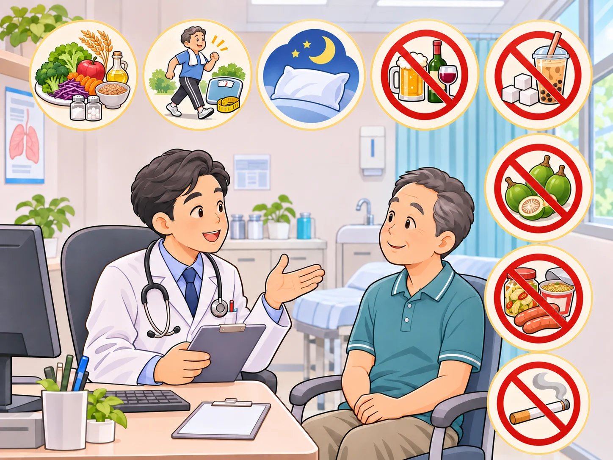

🏥 防癌衛教單｜店小二說給你聽 🩺
🌱 從每天的生活開始，降低癌症風險
很多癌症跟生活習慣有關。從今天開始做一點小改變，就能讓身體更健康 💪

🥗 1. 三低一高飲食
少油、少鹽、少糖，多吃蔬菜水果和全穀類。醃製、加工的食物也盡量少吃 🍎
⚖️ 2. 維持健康體重
避免肥胖，腰圍別超標。吃得均衡、多活動，體重自然穩穩的 😊
🚭 3. 不抽菸，現在戒也不嫌晚
抽菸和許多癌症都有關係，二手菸也要避開。
需要戒菸或想戒菸的朋友，歡迎到成美診所找高醫師 👨⚕️ 診所有尼古丁與非尼古丁的戒菸輔助治療，幫助您成功戒菸。
🍺 4. 不喝酒
喝酒會增加多種癌症的風險，能不喝就不喝。
🚫 5. 不嚼檳榔
檳榔和口腔癌關係密切，戒掉檳榔就是保護自己 👄
🏃 6. 規律運動
每週累積約 150 分鐘的活動，像快走、騎車都可以，有空再加一點肌力訓練 🚴
😴 7. 睡得好、作息規律
好的睡眠讓身體更健康 🌙
📌 別忘了
按時接種建議的疫苗，有 B、C 型肝炎或幽門桿菌的人要好好追蹤治療。身體出現持續不舒服或異常變化時，請盡早就醫 🏥
💬 這張衛教單提供一般健康建議，不能取代醫師診斷。如果有疑問，歡迎回診時和高醫師聊聊。